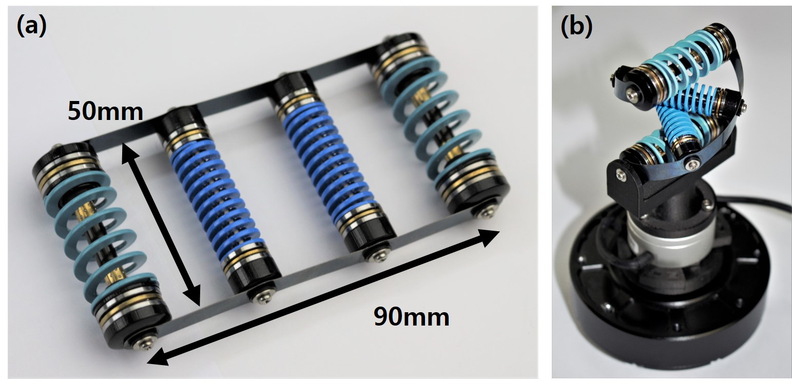
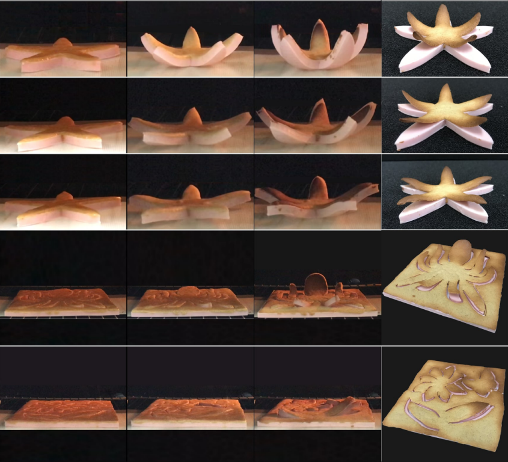
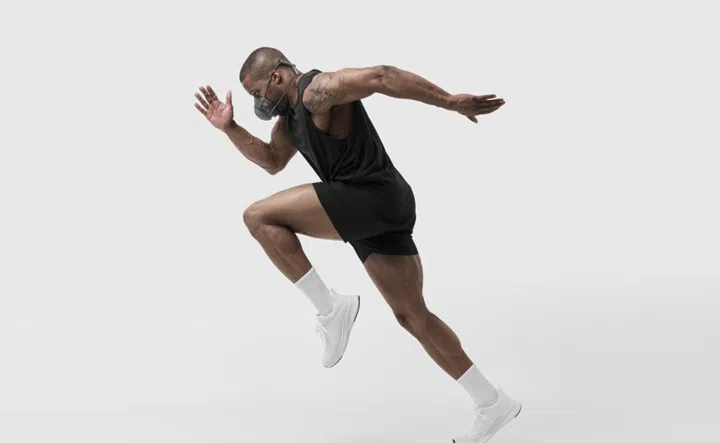
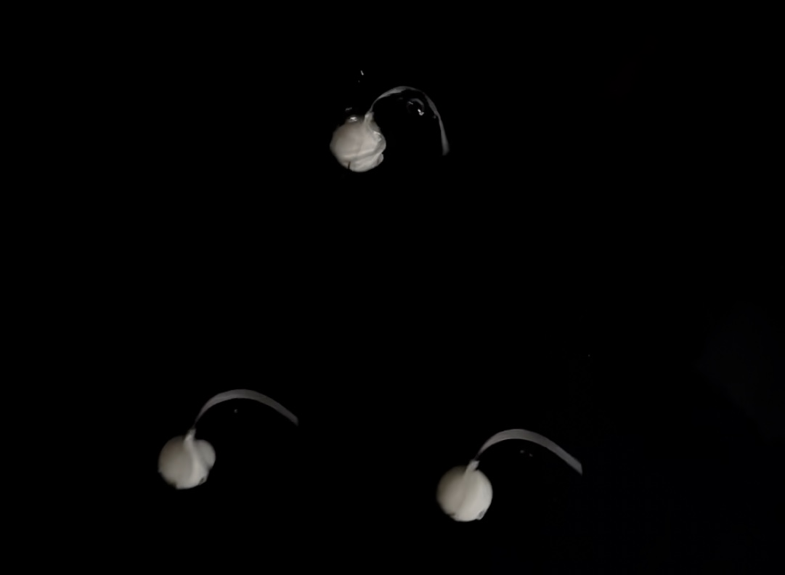

|
Jaeyoun Choi I'm a Ph.D. student at MIT advised by Professor Chuchu Fan. Before I joined MIT, I served as the Chief Technical Officer at Neumafit Corporation, where I focused on developing an AI-powered wearable mask for cardiorespiratory analysis. Prior to that, I completed my B.S. and M.S. in Mechanical Engineering at Seoul National University, conducting research at the Soft Robotics and Bionics Laboratory. My long-term research goal is to develop robots as a universal solution for all tasks requiring physical interaction. Multi-robot systems hold immense potential for enhancing robotic capabilities. Specifically, in my Ph.D. studies, I aim to explore multi-robot collaborative systems where multiple robots physically cooperate to transport and manipulate objects with safety, robustness, and adaptability. |
{kind=link}
Journal Publication

|
Bilateral Back Extensor Exosuit for Multidimensional Assistance and Prevention of Spinal Injuries
Jae In Kim, Jaeyoun Choi (Co-first Author), Junhyung Kim, Junkyung Song, Jaebum Park, Yong-Lae Park Science Robotics, 2024 YouTube I developed a wearable robot that assists various lifting tasks and enhances spinal safety. I verified the BBEX with human subject experiments and musculoskeletal analysis using OpenSim. I theoretically analyzed the potential to reduce risk factors for back injuries. |
|  |
A Twisted Elastic Rotary-Rail Actuator (TERRA) Using a Double-Stranded Helix Structure
Jae In Kim, Jaeyoun Choi (Co-first Author), Junhyung Kim, Yong-Lae Park IEEE Robotics and Automation Letters, 2021 YouTube I derived the theoretical model of the novel compliant linear actuator named TERRA and analyzed its characteristics. |
|  |
Pop-up Cookie Molds: Self-Folding Elastomer Sheets Using Thermal Expansion of Embedded Air Chambers
Junghan Kwon, Myungsun Park, Jaeyoun Choi, Yong-Lae Park Smart Materials and Structures, 2021 YouTube I fabricated the self-folding elastomer sheets using polymer molding and CNC machining. I conducted tensile tests and baking experiments to analyze the repeatability of the polymer. |
Ongoing Projects
Studies in this section are currently in progress and confidential. Therefore, I uploaded information containing only brief outcomes. If you have any additional questions, please email me.
|  |
Estimation of Pulmonary Oxygen Uptake (VO2) and Carbon Dioxide Production (VCO2) via Deep Learning based on Transfer Learning.
Jaeyoun Choi, Jaehoon Kim, Hyunji Kim, Jinmo Kim, Yoon-young Choi, Jooeun Ahn I developed deep-learning algorithm based on gated recurrent unit (GRU) for VO2 and VCO2 estimation. This algorithm is implemented in Neumafit Pacer. |
|  |
Inertia-Driven Swimming Robot with Agile Maneuvers Inspired by the C-start Motion.
Jaeyoun Choi, Inrak Choi, Sohee Yoon, Jungnam Kim, Yong-Lae Park Outstanding MS Thesis Paper & Presentation Award, Seoul National University, 2023 YouTube I designed an inertia-driven swimming robot mimicking the C-start maneuvers of fish. I integrated a LiDAR sensor into the swimming robot, enabling it to recognize and rapidly avoid approaching obstacles. |